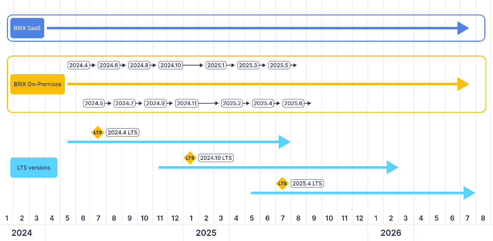

This article provides a description of BRIX’s policy regarding the provision of support for BRIX On-Premises.
Let’s look at the main terms used in the article:
- Software Life Cycle is the period of time from the moment of creation (release) to the moment of withdrawal from the process of support and operation.
- Major Version is a version of the system that contains significant differences from the previous similar release. Major releases of the BRIX On-Premises system can be subdivided into regular and Long Time Support (LTS) releases.
- Long Time Support (LTS) release is a stable version of the system that is updated according to the product life cycle. It is supported for a longer period of time than a regular major release.
Please note, that the LTS release includes critical fixes that interfere with the normal functioning of the program and all security-related updates. Implementation of new functionality is included only in the development of major releases. - Minor Version is a version of a system that contains minor differences within its main (major) release. A minor release includes changes related to increasing the stabilization of the software product. For example, bug fixes that do not change the functioning of the product.
- Release Support is the correction of various bugs in the current version of a release.
BRIX product life cycle and version support
The BRIX On-Premises software version numbering uses the X.Y.Z format, where:
- X is the year of the platform release: 2025.1.0.
- Y is the serial number of the major version release in the year. Stats with a 1. It usually coincides with the month of the version release: 2025.1.0.
- Z is the sequence number of the minor version. It starts with a zero: 2025.1.0.
Support for a regular major release of version X.Y is performed from the release date and terminated when a release with version number X.Y+2 is released, i.e. the current and previous major release is supported. For example, support for release 2024.7 will be terminated immediately after release 2024.9.
The LTS version release occurs in 2 phases:
- A major release of the product, X.Y, which is planned in the LTS, is released.
- After the X.Y+2 release, i.e. two months later, this release is marked (committed) as an LTS version as planned.
Support for the LTS version begins at the time of the commit and ends six months after the new LTS version is committed, i.e., after six major release cycles.
Starting in April 2023, every sixth release will be considered an LTS release. However, it will be committed as LTS not at the time of release, but two months later, as this time is required for bug detection and fixing.
Let’s consider the LTS release support cycle as an example. Release 2024.10, released in November 2024, will be committed as an LTS release, i.e. in February 2025. The next LTS version is scheduled to be committed in August 2025, and version 2024.10 will be supported for six months after that. Thus version 2024.10 is planned to be supported for 15 months: from release in November 2024 to February 2026.
Major releases are released every month.
Minor releases are released when critical fixes appear.
Below is a diagram of the release life cycle. The arrows indicate the range of version support.

Benefits of using Long Time Support releases
For stable and high-quality operation of the application, we recommend using the Long Time Support (LTS) release. It is necessary to update the software product to the latest minor version of this release, as it contains critical bug fixes. Also, using the LTS release for upgrading allows you to allocate resources in a more functional way for planning future updates. In this case, it is enough to wait for the announcement of a new LTS release and schedule the work to upgrade to the new version. At the same time, there is no need to update the system every time for a standard major release, the support time for which is significantly shorter.
Начало внимание
BRIX reserves the right to change the timing of major releases and declare the release of a new release as a Long Time Support (LTS) release regardless of the time or order of release.
Конец внимание
Release life cycle schedule
Support for the 2024.4 LTS release:
- Release date: May 2024.
- LTS release commit: August 2024.
- Support is completely terminated after July 2025.
Support for the 2024.10 LTS release:
- Release date: November 2024.
- LTS release commit: February 2025.
- Support is completely terminated after July 2025.
Support for the 2025.4 LTS release (this versions has not been released yet and is provided for illustration purposes):
- Release date: May 2025.
- LTS release commit: August 2025.
- Support is completely terminated after July 2026.
Download a specific BRIX On-Premises version
You can install a specific BRIX On-Premises version, such as:
- Latest major version.
- Minor versions of a specific release.
- Latest major LTS release.
- Minor version of a specific LTS release.
- Major version of a specific regular or LTS release.
All the download links are provided in Links for downloading BRIX distribution packages.
To learn more about installing the system, see Install BRIX Enterprise, Install BRIX Standard.
Notification about termination of release support
Termination of release support means that for the respective system versions BRIX tech support will only consider requests containing platform-critical errors. Errors related to configuration issues and other types of requests will not be considered.
In addition, updates and distributions of the specified versions will be unavailable, and documentation updates for these versions will be discontinued.
For an up-to-date list of BRIX On-Premises release versions, please visit the tech support website.
Read more about BRIX On-Premises update in the following articles:
Found a typo? Select it and press Ctrl+Enter to send us feedback